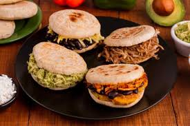
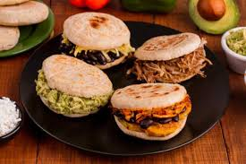

The etymology of arepa leads us to the cumanagoto erepa, which can be translated as
"corn". The term refers to different gastronomic preparations according to the region.
At a general level, arepa is a type of tortilla or bread that is made with corn flour.
Its ingredients and its preparation vary according to the country.
Ingredients
- Precooked corn flour
- Water
- Salt
Preparation
- Place cups of Precooked corn flour in a bold
- For each cups of Flour add another cup of water.
- stir and knead
- add Salt to taste
- With the dough, make the shape of a wheel.
- Place the resultant wheel in the "Budare" or some grill or even a pan.
- Remove from the pan, and fill it with your preference.
Possible fillings of an arepa
Theres many possibles choices to fill yours arepas, like:
- meatleaf.
- Ground beef.
- Domino.
- Cheese and all his types.
- Etc.
 
